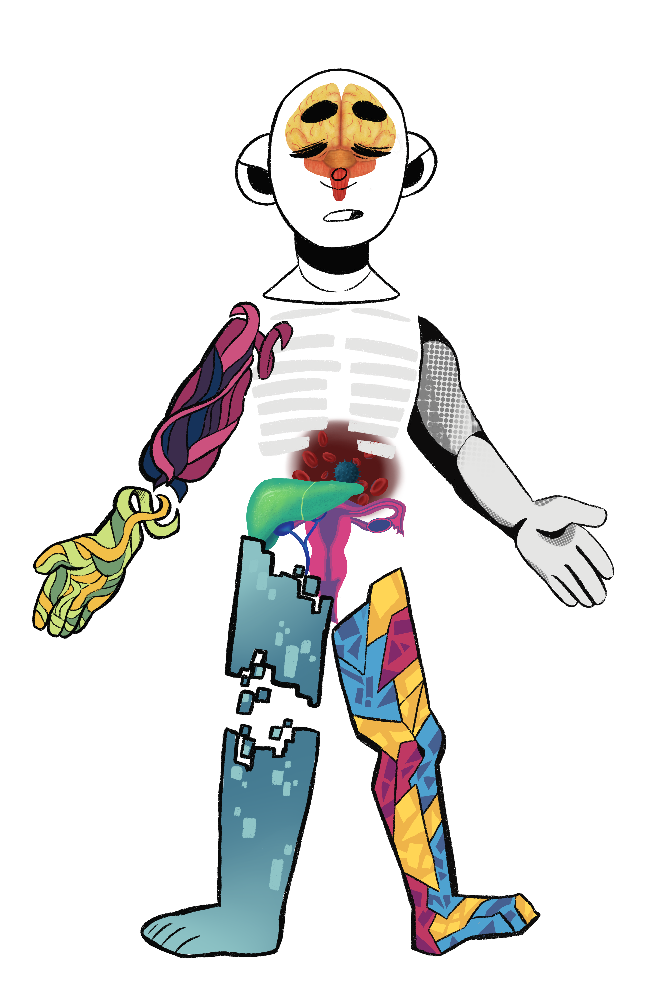

Embodied
Autopathography can help the dying know that they are not alone, they are not outcasts and it is ok to feel what they feel; it can also help the dying’s loved ones understand what they are going through. It is far too valuable to be lost in a storage closet, lost to some antiquated equipment, lost to a disaster… Technology is a tool for conservation and accessibility, to preserve art from being lost.
